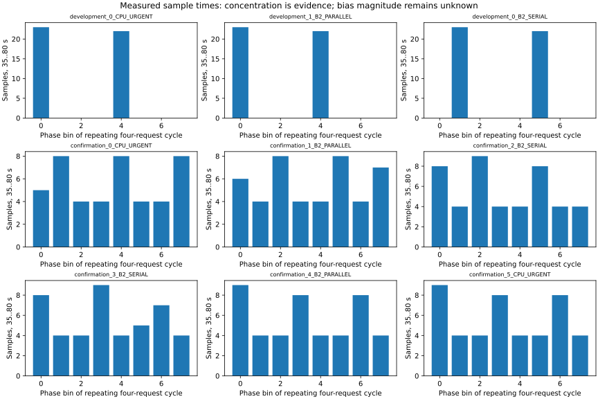

기존 모형 동결 유지 · 사후 분석 · 편향의 원인과 크기 미확정 · experiment_ready=false
개발 500ms 입력의 전력 표본은 반복 주기의 8구간 중 2구간에 집중됐습니다. 확인 550ms 입력은 8구간 모두에 분산됐습니다. 이 차이만으로 관측 에너지를 보정하거나 aliasing을 단일 원인으로 확정하지 않습니다.

세션 수치 · 시간 구간 전력 · 식별 민감도·근거 해시 · 재현·한계
새 ABBA 계측 비교는 계수 적합 없이 1,000/900/900/1,000ms를 대조합니다. 실행 전 고정 계약